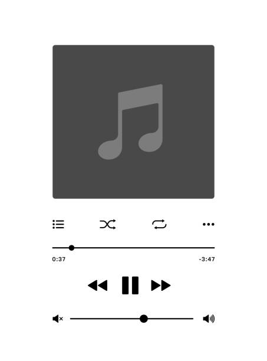

Hello and welcome to my page! I was born in October 6, 2006, I'm 19 years old and I am currently aspiring to finish college at the University of Santo Tomas with the Bachelor degree in Information Technology in the College of Computing and Information Systems.
I love to enjoy my past time with gaming.

I play and listen music if I want to set a mood to myself.
Purple!
Currently learning Java, CSS, HTML, and I'm very interested with Python.
My favorite Youtuber is the football club Chelsea FC!
The Youtube link to my favorite song! - No. 1 Party Anthem by Arctic Monkeys